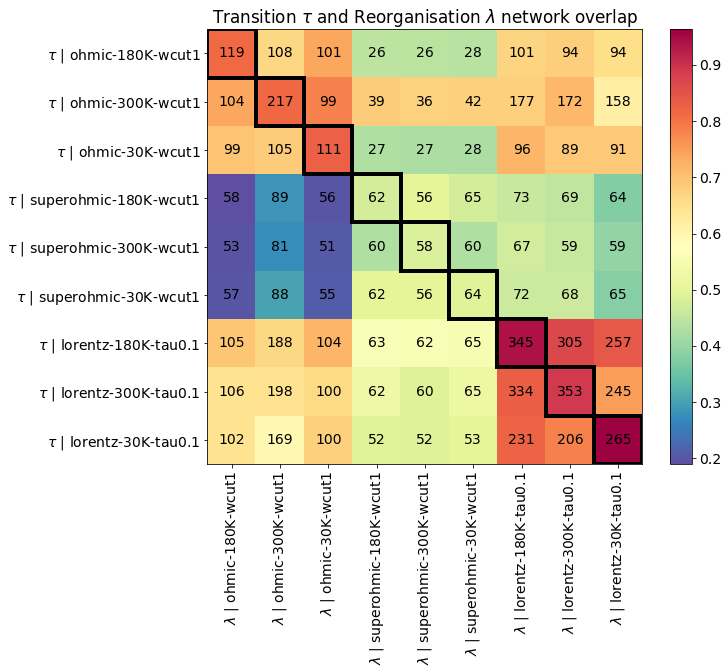
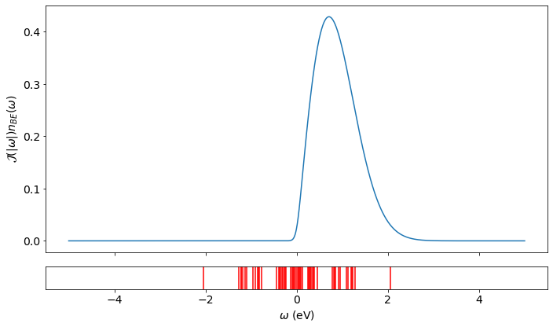
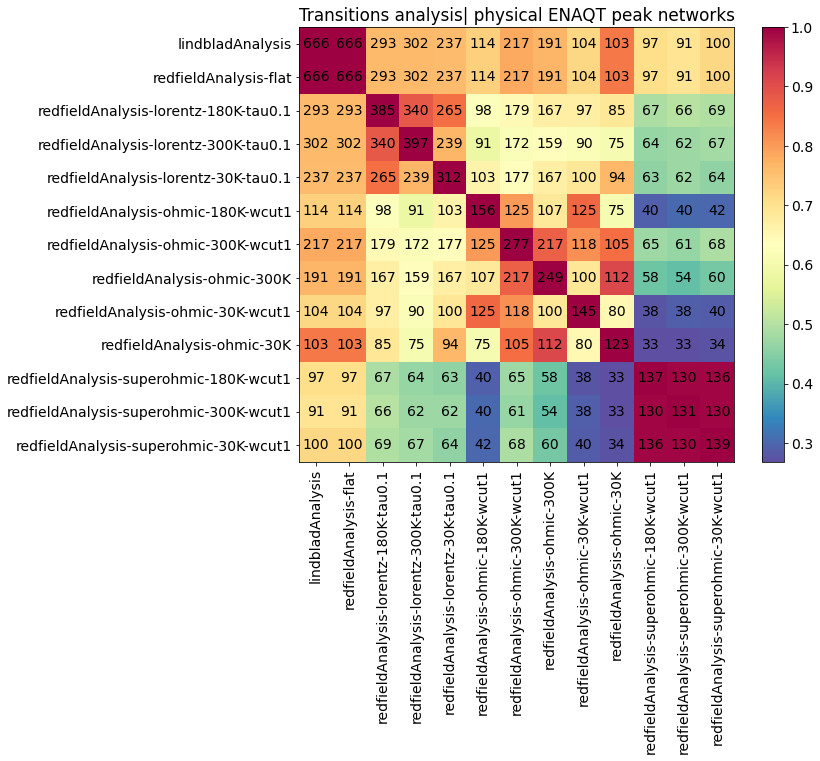

## Weekly Update --- ### Last Week 1. Added more structure to my inversion symmetry code 2. Been granted a 3 month funded extension (yay!) 3. Improved data analysis to determine what behaviour is 'physical' in my dataset 4. Begun determining what hierarchies of factors are involved --- ### Main Result  <p>Comparing reorganisation energy and transition time for common networks</p> -- ### Adding in some calculations for typical transition time  <p> This one shows Wannier-Stark localisation </p> -- ##### Getting typical transitions of a system  <p> This one shows Wannier-Stark localisation </p> -- ### Some time in Duns <img class="r-stretch" src="img/dunsCastle.jpg" title="Comparing common networks between different spectral densities with physical typical transitions." style = "background: #F0EAD6"> --- ### This Week 1. Test more symmetric networks, consider adding dynamics or alternate lattices 2. Plan holidays 3. Find way to tease apart the hierarchy of influences on ENAQT